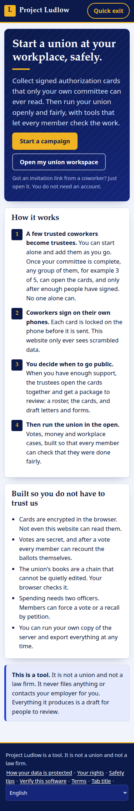
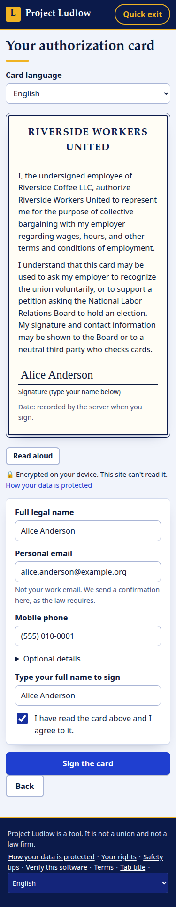
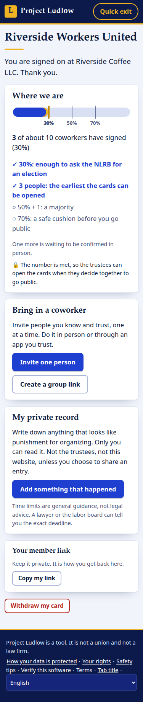
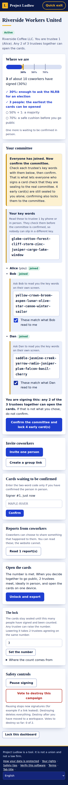
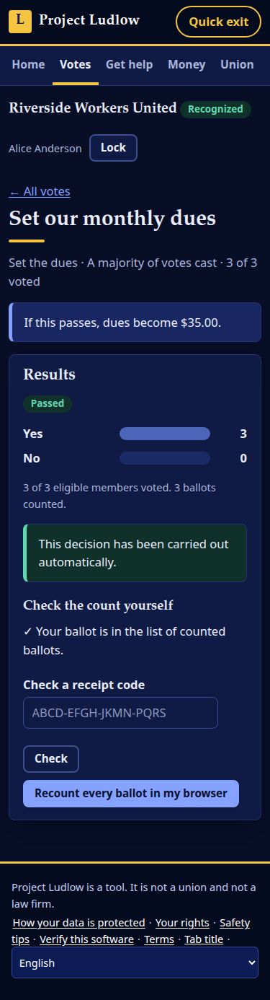
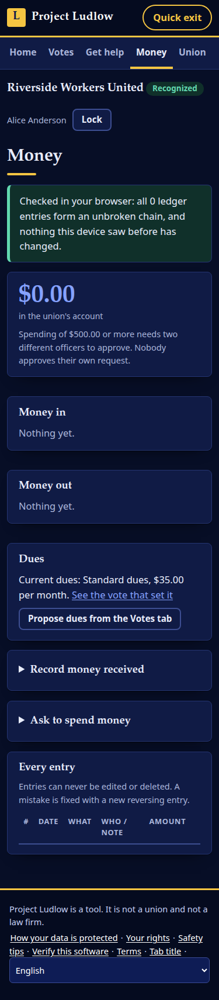

Early prototype. Not yet security-audited or legally reviewed, so please don't use it for real organizing yet. Help us get it there.
Open source · worker-first · built to be checked
A union nobody can silence, and nobody has to trust.
Project Ludlow lets coworkers sign union authorization cards that the server stores only as ciphertext, then run their union with secret ballots, open books and fair case handling that members can check for themselves.
Coworkers sign electronic authorization cards on their own phones. Each card is encrypted in the browser with a key split among a few trusted trustees. One person can start alone and add the committee later. When the committee decides to go public, the browser builds the filing package locally: roster, cards, declaration and draft letters. Nothing is filed or sent for you.
2 · Run
Run it in the open
A workspace with secret-ballot votes, workplace cases with real deadlines, a ledger every member can audit, bylaws that carry out members' decisions by themselves, and petitions that let members force a vote or a recall.
Built so you don't have to trust us
Nobody can read a card early
Cards are encrypted on the signer's phone and the server stores only ciphertext. (The one exception: to send the confirmation email the law requires, it handles the signer's details once and then discards them.) The encryption catches any edit to a card, though not a card that is withheld or deleted, and every invitation carries a check of the founder's key, so a phone refuses keys the server made up.
A lock that is enforced
Set a release number when the campaign starts. The server refuses to hand over the sealed cards until that many people have signed and been counted. Lowering the number takes several trustees. It is a safety catch, not proof that real people signed.
Start with one person
Organizing begins with a conversation, not a committee. Go live the moment you have a key, then lock your early cards to the full committee when it exists.
Votes you can recount
Ballots are stored with no name or time. When the committee publishes the ballot key (always, for dues, rules and recalls), any member's browser can recount the ballots and check its own receipt.
Books that can't be quietly edited
The ledger is a hash chain that every member's browser verifies and remembers, so a rewrite it has already seen is caught. Officers' browsers check the audit log the same way. Big spending needs two different officers.
Software you can check
No trackers or third-party code, a strict content policy, and builds designed to be reproducible (they matched byte for byte when last checked), so anyone can compare the served code with the source.
Try the lock
This runs the same cryptography as the app, on your device. Seal a (fake) card among five trustees, then see what it takes to open it. Nothing you type leaves this page.
The demo loads about 200 KB of cryptography, only when you ask.
Made for phones, in the light or the dark
Real screens from the running app: no mock-ups.

Start a campaign

The card a coworker signs

Progress, and where the lock opens

Start alone, add the committee

A vote any member can recount

Books checked in your browser
Built for anywhere, and for hard situations
The law lives in data
Thresholds, card wording and document templates are jurisdiction packs, not code. The US (NLRA) and UK (CAC) are in, plus a general pack. Adding a country is adding files.
Any language
English, and Spanish for the signing flow and main pages; the trustee dashboard, votes and most of the workspace are English only for now. A language is one file, and right-to-left scripts are supported. Every legal text is marked as a draft for a qualified reviewer.
Made for risk
A quick-exit button, QR invites that leave no message trail, a private record of employer conduct with a filing-deadline clock, neutral tab titles, and no tracking of any kind.
Honest limits
It is unaudited. Nobody independent has reviewed the cryptography or the code yet. That is the first thing we need. An internal, AI-assisted review found and fixed serious problems, but it shares the blind spots of whatever wrote the code.
A server that lies about keys could still read new grievances and votes. For cards and reports, every invitation carries a check of the founder's key and the founder signs the committee, so a phone refuses keys the server invented. The same protection for the workspace's grievance and vote keys is not built yet, and all of it assumes the app itself was not altered.
The legal text is draft. Every document carries a warning and open TODO(lawyer) questions. Nothing here is legal advice, and nothing is ever filed or sent for you.
The release lock is enforced by the server, not by mathematics. It stops trustees, but not someone who can read the database, so host it where no trustee controls it. It also counts accepted cards, so an insider who can invite people can raise the count.
A recount checks that the numbers match the stored ballots, not that none was swapped, and an operator running modified code could see which session sent which ballot.
A founder who starts alone can open early cards alone until they confirm the full committee, and any copy of those cards made before they are re-locked stays openable with the founder's key. The app says so plainly.
Much of it was written with AI assistance (Claude Code) from written specs, which is exactly why it needs human reviewers.
git clone https://github.com/ChrisRyanWill/project-ludlow.git
cd project-ludlow
npm install
npm start # http://localhost:8787
npm test # unit, API and real-browser tests
Node 20 or newer. One SQLite file for data, and a Dockerfile if you prefer.